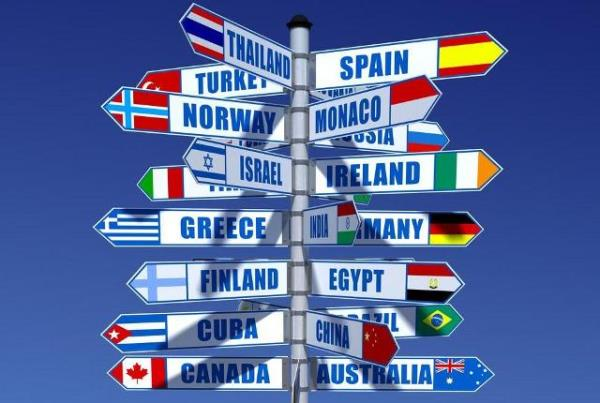
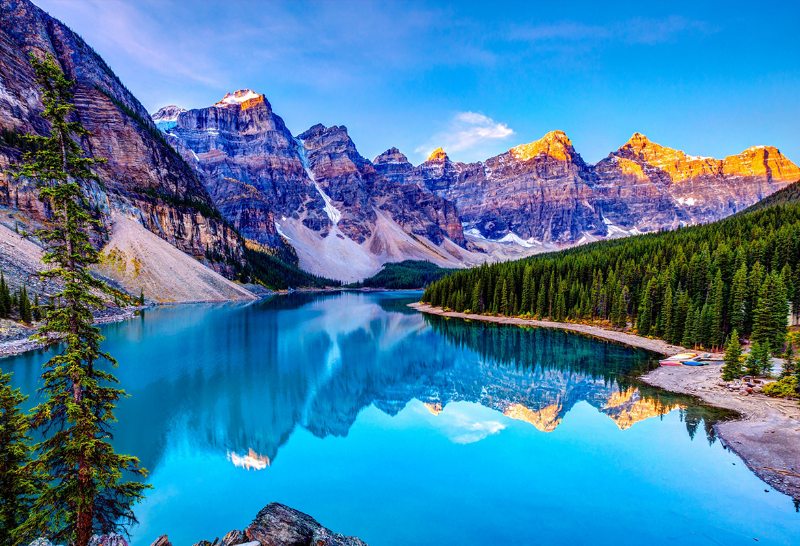
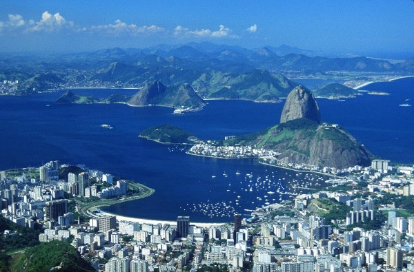

Locais de viajens
Paris
Paris é a capital mais populosa cidade da França.
Clima: De tipo oceânico de transição
Pontos Turisticos: Torre Eiffel,Arco do Triunfo,Museu do Louvre,Panteão...
Cultura: Paris tem um lugar privilegiado no âmbito artístico e cultural a nível mundial nos últimos séculos.
Nasceram na cidade movimentos artísticos como o expressionismo,
o surrealismo e o fauvismo e importantes figuras da arte e pensamento como René Descartes, Voltaire, Victor Hugo, Émile Zola...
Dubai
Dubai é a maior cidade e emirado de mesmo nome dos Emirados Árabes Unidos.
Clima: Predominantemente quente e árido
Pontos Turisticos: Palm Islands,The World,Burj Al Arab,Burj Khalifa...
Cultura: Dubai é famosa por suas obras grandiosas e de forte apelo turístico.
Dentre elas, podemos destacar as Palm Islands, o arquipélago The World, o hotel Burj Al Arab e o edifício Burj Khalifa.
New York
New York é um estado no nordeste dos Estados Unidos e é o 27º mais extenso.
Clima: Clima continental úmido
Pontos Turisticos: Central Park,Estátua da Liberdade,Empire State Building,Times Square...
Cultura: É uma cidade altamente ativa. Possui muitos cognomes: O mais famoso deles é "A Grande Maçã".
Punta Cana
Punta Cana faz parte do distrito municipal de Punta Cana-Bávaro-Verón-Macao,em La Altagracia,a província mais oriental
da República Dominicana.
Clima: O tempo é bastante consistente ao longo do ano, com uma temperatura média de 30°C.
Pontos Turisticos: Cabo Engaño,Cap Cana,Altos de Chavón...
Cultura: É uma cultura versátil, onde possui pessoas de toda a parte do mundo, para desfrutar de suas praias paradisíacas.
Orlando
Orlando é uma cidade localizada no estado norte-americano da Flórida,no condado de Orange.
Clima: Possui um clima subtropical quente e úmido,onde duas estações climáticas são bastantes peculiares.
Pontos Turisticos: Islands of Adventure,Magic kingdom,Harry P.Leu Gardens,Typhoon Lagoon...
Cultura: Orlando é tão conhecida por seus parques temáticos insuperáveis que seu rico patrimônio artístico e cultural fica, muita vezes, de lado.
Entretanto, a Grande Orlando ostenta alguns dos mais famosos museus e galerias do mundo.
De fato, o Museu Morse de Arte Americana possui a maior coleção de obras do artista americano Louis Comfort Tiffany.
Orlando tem suas próprias companhias de ópera e de balé,e teatros.
Grécia
Grécia,oficialmente República Helênica ou Helénica e conhecida desde a antiguidade como Hélade.
O país está estrategicamente localizado no cruzamento entre a Europa, a Ásia, o Oriente Médio e a África.
Clima: O clima da Grécia pode ser classificado em três tipos (mediterrânico, a alpino e o temperado) que influenciam regiões
bem definidas do seu território.
Pontos Turisticos: Esparta,Atenas,Santorini...
Cultura: Os remanescentes físicos da cultura da Grécia clássica conservam-se principalmente em Atenas,Esparta,Micenas,Argos
e outros sítios, enquanto as esculturas e outros objetos de arte exibidos nos museus gregos e dos principais centros culturais
do mundo constituem uma lembrança permanente de copiosa herança cultural helênica, que ainda continua viva na educação dos gregos.
Itália
Itália,oficialmente República Italiana, é uma república parlamentar unitária localizada no centro-sul da Europa.
Clima: O clima da Itália varia de região para região. O norte da Itália (Milão, Turim e Bolonha) tem um clima
continental, quando ao sul de Florença apresenta o clima mediterrânico, com verões tipicamente secos e ensolarados.
Pontos Turisticos: Milão,Roma,Florença,Bolonha,Palermo...
Cultura: A Itália é um dos países que mais influência teve e tem na cultura europeia e mundial, em todas as áreas da arte e cultura.
Os italianos podem vangloriar-se de uma longa tradição cultural das artes às ciências e tecnologia,
e uma forte tradição de excelência em todas as artes, culturas, literatura e ciências,corroborado no facto
de o país possuir o maior número de patrimônios da UNESCO, totalizando 44. São nomes italianos
grandes polímatas, artistas e gênios, como Dante, Leonardo da Vinci, Michelangelo e Enrico Fermi.
Chile
Chile,oficialmente República do Chile, é um país da América do Sul, que ocupa uma longa e estreita faixa costeira
encravada entre a cordilheira dos Andes e o oceano Pacífico.
Clima: O clima do Chile compreende uma ampla gama de condições climáticas através de uma larga escala geográfica,
estendendo-se através de 38 graus de latitude.
Pontos Turisticos: Ilha de Páscoa,Santiago,Parque Nacional Torres del Paine,Pucón,Puerto Varas...
Cultura: Os chilenos chamam seu país de "país de poetas". O esporte mais popular do Chile é o futebol. A Gastronomia chilena
é um reflexo da variedade topográfica do país, que caracteriza uma variedade de frutos do mar, carne, frutas e legumes.

Rio de Janeiro
Rio de Janeiro,é um município brasileiro, capital do estado homônimo, situado no Sudeste do país.
Clima: O clima do Rio de Janeiro é o tropical atlântico, com variações locais, devido às diferenças de altitude,
vegetação e proximidade do oceano.
Pontos Turisticos: Cristo Redentor,Pão de Açúcar,Copacabana,Lagoa Rodrigo de Freitas...
Cultura: O Rio de Janeiro herdou de seu passado uma forte vocação cultural. Atualmente, o Rio aglutina
os principais centros de produção da TV brasileira: o Projac da Rede Globo, o RecNov da
Rede Record e o "Polo de Cinema de Jacarepaguá".

Curitiba
Curitiba é um município brasileiro, capital do estado do Paraná. É o município mais populoso do Paraná e da região Sul,
além de ser o 8º mais populoso do país.
Clima: Curitiba tem um clima temperado.
Pontos Turisticos: Ópera de Arame,Jardim Botânico,Museu Oscar Niemeyer...
Cultura: O Festival de Teatro de Curitiba, um dos mais importantes festivais de teatro do país,
ocorre desde 1992, habitualmente composto de atrações internacionais, grande atrações
nacionais, montagens locais e uma mostra alternativa.Em Curitiba há alguns festivais anuais.
Alguns deles são diretamente dedicados às artes, como o Festival de Teatro de Curitiba e a Oficina de
Música de Curitiba. A cidade de Curitiba conta também com a Bienal Internacional de Curitiba.

Clima: Predominantemente quente e árido
Pontos Turisticos: Palm Islands,The World,Burj Al Arab,Burj Khalifa...
Cultura: Dubai é famosa por suas obras grandiosas e de forte apelo turístico.
Dentre elas, podemos destacar as Palm Islands, o arquipélago The World, o hotel Burj Al Arab e o edifício Burj Khalifa.
Clima: Clima continental úmido
Pontos Turisticos: Central Park,Estátua da Liberdade,Empire State Building,Times Square...
Cultura: É uma cidade altamente ativa. Possui muitos cognomes: O mais famoso deles é "A Grande Maçã".
da República Dominicana.
Clima: O tempo é bastante consistente ao longo do ano, com uma temperatura média de 30°C.
Pontos Turisticos: Cabo Engaño,Cap Cana,Altos de Chavón...
Cultura: É uma cultura versátil, onde possui pessoas de toda a parte do mundo, para desfrutar de suas praias paradisíacas.
Clima: Possui um clima subtropical quente e úmido,onde duas estações climáticas são bastantes peculiares.
Pontos Turisticos: Islands of Adventure,Magic kingdom,Harry P.Leu Gardens,Typhoon Lagoon...
Cultura: Orlando é tão conhecida por seus parques temáticos insuperáveis que seu rico patrimônio artístico e cultural fica, muita vezes, de lado.
Entretanto, a Grande Orlando ostenta alguns dos mais famosos museus e galerias do mundo.
De fato, o Museu Morse de Arte Americana possui a maior coleção de obras do artista americano Louis Comfort Tiffany.
Orlando tem suas próprias companhias de ópera e de balé,e teatros.
O país está estrategicamente localizado no cruzamento entre a Europa, a Ásia, o Oriente Médio e a África.
Clima: O clima da Grécia pode ser classificado em três tipos (mediterrânico, a alpino e o temperado) que influenciam regiões
bem definidas do seu território.
Pontos Turisticos: Esparta,Atenas,Santorini...
Cultura: Os remanescentes físicos da cultura da Grécia clássica conservam-se principalmente em Atenas,Esparta,Micenas,Argos
e outros sítios, enquanto as esculturas e outros objetos de arte exibidos nos museus gregos e dos principais centros culturais
do mundo constituem uma lembrança permanente de copiosa herança cultural helênica, que ainda continua viva na educação dos gregos.
Clima: O clima da Itália varia de região para região. O norte da Itália (Milão, Turim e Bolonha) tem um clima
continental, quando ao sul de Florença apresenta o clima mediterrânico, com verões tipicamente secos e ensolarados.
Pontos Turisticos: Milão,Roma,Florença,Bolonha,Palermo...
Cultura: A Itália é um dos países que mais influência teve e tem na cultura europeia e mundial, em todas as áreas da arte e cultura.
Os italianos podem vangloriar-se de uma longa tradição cultural das artes às ciências e tecnologia,
e uma forte tradição de excelência em todas as artes, culturas, literatura e ciências,corroborado no facto
de o país possuir o maior número de patrimônios da UNESCO, totalizando 44. São nomes italianos
grandes polímatas, artistas e gênios, como Dante, Leonardo da Vinci, Michelangelo e Enrico Fermi.
encravada entre a cordilheira dos Andes e o oceano Pacífico.
Clima: O clima do Chile compreende uma ampla gama de condições climáticas através de uma larga escala geográfica,
estendendo-se através de 38 graus de latitude.
Pontos Turisticos: Ilha de Páscoa,Santiago,Parque Nacional Torres del Paine,Pucón,Puerto Varas...
Cultura: Os chilenos chamam seu país de "país de poetas". O esporte mais popular do Chile é o futebol. A Gastronomia chilena
é um reflexo da variedade topográfica do país, que caracteriza uma variedade de frutos do mar, carne, frutas e legumes.
Clima: O clima do Rio de Janeiro é o tropical atlântico, com variações locais, devido às diferenças de altitude,
vegetação e proximidade do oceano.
Pontos Turisticos: Cristo Redentor,Pão de Açúcar,Copacabana,Lagoa Rodrigo de Freitas...
Cultura: O Rio de Janeiro herdou de seu passado uma forte vocação cultural. Atualmente, o Rio aglutina
os principais centros de produção da TV brasileira: o Projac da Rede Globo, o RecNov da
Rede Record e o "Polo de Cinema de Jacarepaguá".
além de ser o 8º mais populoso do país.
Clima: Curitiba tem um clima temperado.
Pontos Turisticos: Ópera de Arame,Jardim Botânico,Museu Oscar Niemeyer...
Cultura: O Festival de Teatro de Curitiba, um dos mais importantes festivais de teatro do país,
ocorre desde 1992, habitualmente composto de atrações internacionais, grande atrações
nacionais, montagens locais e uma mostra alternativa.Em Curitiba há alguns festivais anuais.
Alguns deles são diretamente dedicados às artes, como o Festival de Teatro de Curitiba e a Oficina de
Música de Curitiba. A cidade de Curitiba conta também com a Bienal Internacional de Curitiba.